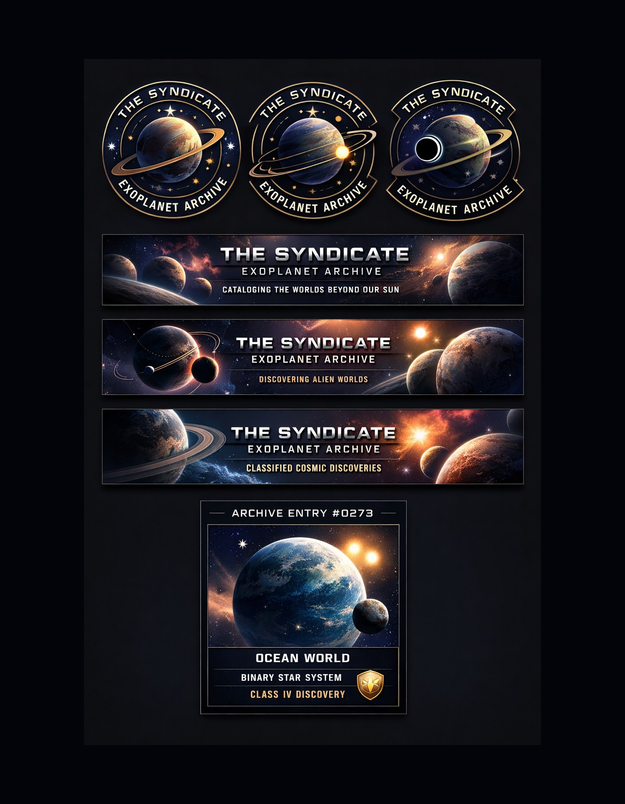

Transit Method
A planet crosses in front of its star and causes a tiny dip in brightness.
NASA-Oriented Science
An exoplanet is a planet outside our Solar System. Most orbit other stars, while some rogue planets drift without being bound to a star.
A planet crosses in front of its star and causes a tiny dip in brightness.
A planet's gravity makes its star wobble, shifting the star's light slightly.
In rare cases, telescopes can directly image planets separated far enough from their stars.
Gravity bends background starlight, revealing planets through a temporary light signal.
NASA commonly groups exoplanets into gas giant, Neptunian, super-Earth, and terrestrial categories.

The Syndicate Universe treats public exoplanet discoveries as the roots of a classified future archive. Real-world observations become the spark for imagined colonies, ruins, missions, and planetary legends.
Independent project. Not affiliated with NASA.